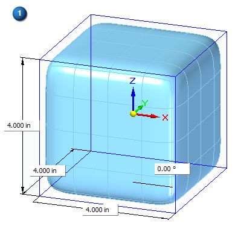
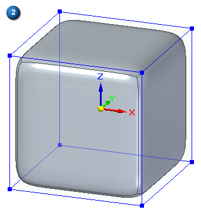
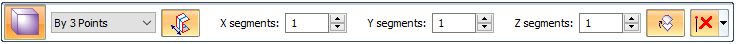
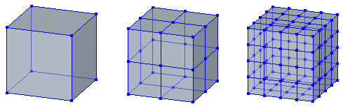
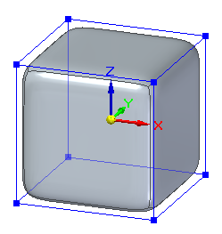
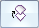
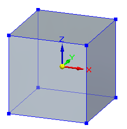

Box command in Subdivision Modeling
In the Subdivision Modeling environment, the Home tab→Shapes group→Box command creates a box-shaped primitive with smooth or hard edges as the basis for your subdivision feature.
Specifying creation methods
The default creation method is At Origin, with the Smooth edges option  selected, as shown in the following example.
selected, as shown in the following example.
You can change the default initial dimensions and settings on the command bar,

And then right-click to accept and finish the basic shape.

You can change the creation method to any of these options using the Selection Type list on the command bar: By Center, By 2 Points, or By 3 Points.

With any of these methods, you also can select the Symmetric option on the Box command bar.
Specifying initial segments (faces)
For all placement options, you can use the command bar to set the number of cage segments in the X, Y, and Z direction independently or to be the same. Cage segments define the number of edges that you can manipulate, with more faces providing more detail.
The number of segments is the same in the X, Y, and Z directions. From left to right:
Segments in XYZ=1
Segments in XYZ=2
Segments in XYZ=4

You can control the size and color of vertices and edges using the Home tab→Style group→Cage Style command  .
.
Specifying smooth or hard edges in the initial shape
The default box shape is displayed with smooth edges.

To create a shape with hard edges, turn off the Smooth option

on the command bar.
How do I
Subdivision Modeling workflowMove cage elements
Move using Quick Move
Use symmetric mode in Subdivision Modeling
Scale a subdivision model
Split subdivision model faces
Split faces with offset
Offset cage faces
Connect cage faces or edges with a bridge
Delete and fill cage faces
Align a shape to a curve
Learn more
Introduction to Subdivision ModelingUsing PathFinder with subdivision models
Working with cage elements
Creating subdivision features
Working with subdivision features
Moving and rotating cage elements
Look up more details
Subdivision Modeling commandBox command bar
Cylinder command in Subdivision Modeling
Cylinder command bar
Sphere command in Subdivision Modeling
Sphere command bar
Torus command
Torus command bar
Scale command in Subdivision Modeling
Blend command
Show Blend Values command
Split command
Split with Offset command
Bridge command
Align to Curve command
Cage Style command